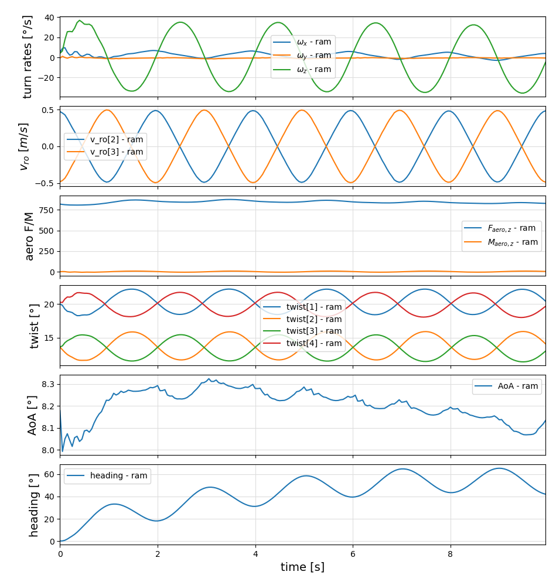
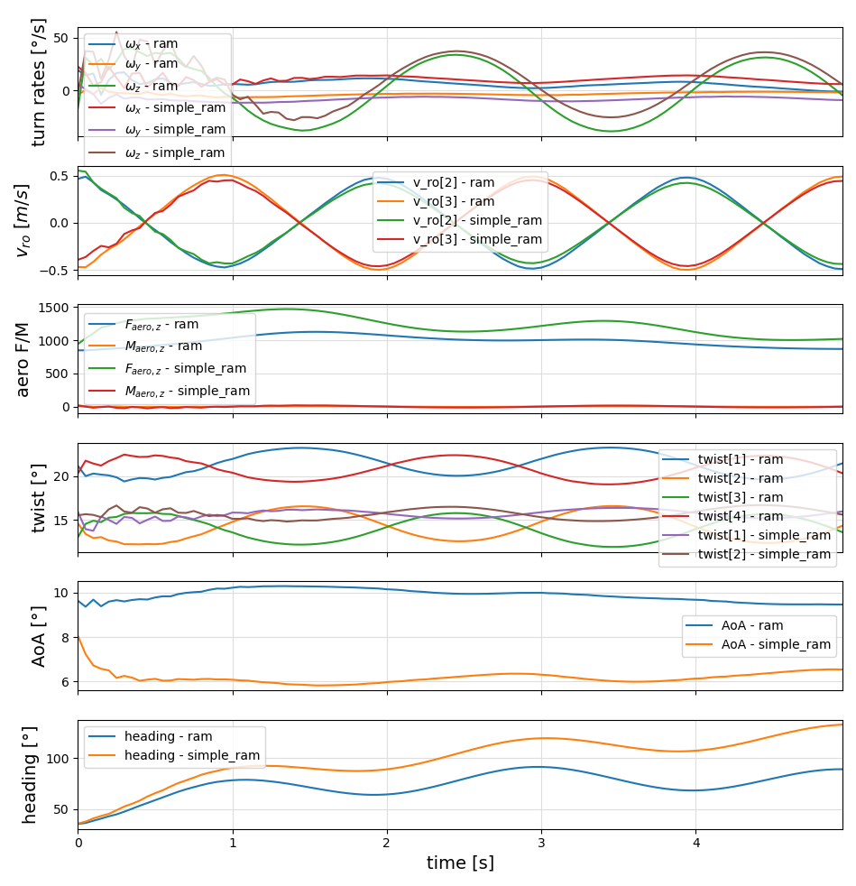

Examples for using the ram air kite model
Create a test project
mkdir test
cd test
julia --project=.Don't forget to type the dot at the end of the last line. With the last command, we told Julia to create a new project in the current directory.
You can copy the examples to your project with:
using SymbolicAWEModels
SymbolicAWEModels.install_examples()Running the first example
include("examples/ram_air_kite.jl")Expected output for first run:
[ Info: Loading packages
[ Info: Precompiling SymbolicAWEModelsControlPlotsExt [986c3e0b-c4a6-5a67-87ac-f6b86e76af74] (cache mi
sses: include_dependency fsize change (2), wrong dep version loaded (14), mismatched flags (2))
Time elapsed: 24.149010176 s
[ Info: Creating SymbolicAWEModel:
Time elapsed: 38.51030329 s
[ Info: System initialized at:
Time elapsed: 120.861073757 s
[ Info: Generating oscillating steering commands...
[ Info: Starting simulation
┌ Info: Performance Summary:
│ Component | Speedup (×) | Total Time
│ -------------|--------------|------------
│ Simulation | 2.34 | 2.14
│ Step | 5.96 | 0.84
│ Integrator | 34.15 | 0.15
└ VSM | 2.62 | 1.91
[ Info: Simulated at:
Time elapsed: 213.981574478 s
[ Info: Plotted at:
Time elapsed: 220.05251771 s
220.05251771After the second time it runs much faster, because the simplified ODE system is cached in the model*.bin file in the data folder and the deserialization is precompiled:
[ Info: Loading packages
Time elapsed: 0.017465498 s
[ Info: Creating SymbolicAWEModel:
Time elapsed: 1.85496798 s
[ Info: System initialized at:
Time elapsed: 5.364508521 s
[ Info: Generating oscillating steering commands...
[ Info: Starting simulation
┌ Info: Performance Summary:
│ Component | Speedup (×) | Total Time
│ -------------|--------------|------------
│ Simulation | 2.53 | 1.97
│ Step | 6.61 | 0.76
│ Integrator | 41.21 | 0.12
└ VSM | 2.79 | 1.79
[ Info: Simulated at:
Time elapsed: 7.995500858 s
[ Info: Plotted at:
Time elapsed: 8.309523118 s
8.309523118In this example, the kite is first stabilized, and then a sinus-shaped steering input is applied such that the kite is dancing in the sky.

Running the second example
include("examples/simple_model.jl")Tether 1: ω_n=227.039 rad/s,
T_s=0.1 s,
ζ=0.1319, c=3.4209 Ns/m
Tether 2: ω_n=228.866 rad/s,
T_s=0.1 s,
ζ=0.1309, c=3.4211 Ns/m
Tether 3: ω_n=235.585 rad/s,
T_s=0.1 s,
ζ=0.1272, c=0.8549 Ns/m
Tether 4: ω_n=236.834 rad/s,
T_s=0.1 s,
ζ=0.1265, c=0.8552 Ns/m
Summary of Results:
Tether 1: k = 2943.0749476475257 N/m, c = 3.4208593453647103 Ns/m
Tether 2: k = 2990.816045085089 N/m, c = 3.4210625600793843 Ns/m
Tether 3: k = 791.9269801315223 N/m, c = 0.8549123148071024 Ns/m
Tether 4: k = 800.5953494095929 N/m, c = 0.8551804418169453 Ns/m
[ Info: Generating oscillating steering commands...
[ Info: Starting simulation
┌ Info: Performance Summary:
│ Component | Speedup (×) | Total Time
│ -------------|--------------|------------
│ Simulation | 1.99 | 1.25
│ Step | 5.54 | 0.45
│ Integrator | 24.27 | 0.10
└ VSM | 2.59 | 0.97
[ Info: Generating oscillating steering commands...
[ Info: Starting simulation
┌ Info: Performance Summary:
│ Component | Speedup (×) | Total Time
│ -------------|--------------|------------
│ Simulation | 0.46 | 5.44
│ Step | 10.22 | 0.24
│ Integrator | 1385.79 | 0.00
└ VSM | 3.49 | 0.72The simple model connects the tethers directly to the wing. In contrast, the default model features a more complex speed system that uses pulleys and multiple attachment points. By matching key dynamic properties—such as the moment on the wing groups, stiffness, and damping—the simple model can be tuned to closely replicate the response of the more complex default model, at a much better performance.

Linearization
The following example creates a nonlinear system model, finds a steady-state operating point, linearizes the model around this operating point and creates bode plots from inputs (torques) to output (heading).
include("examples/lin_ram_model.jl")See: lin_ram_model.jl